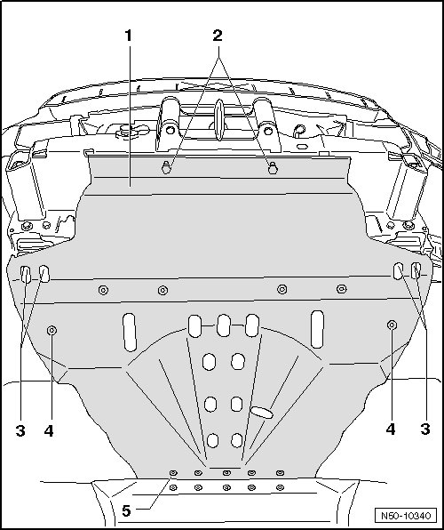

Underbody Impact Guard For Engine
Underbody Impact Guard
Underbody Impact Guard for Engine
Removing

- Front bumper, vehicles through 10.2006, removing, refer to --> [ Bumper Cover ] Front Bumper, through 10.2006
- Front bumper, vehicles from 11.2006 >, removing, refer to --> [ Bumper Cover Assembly Overview ]
- Remove the bolts - 2 -, - 3 -, - 4 - and - 5 - and remove underbody impact guard for engine - 1 -.
Installation
- Position underbody impact guard for engine - 1 - and bolt it with bolts - 2 -, - 3 -, - 4 - and - 5 -.
Tighten all bolts from assembly overview of underbody impact guard for engine to tightening specification. Refer to --> [ Underbody Impact Guard for Engine Assembly Overview ] Underbody Impact Guard For Engine Assembly Overview